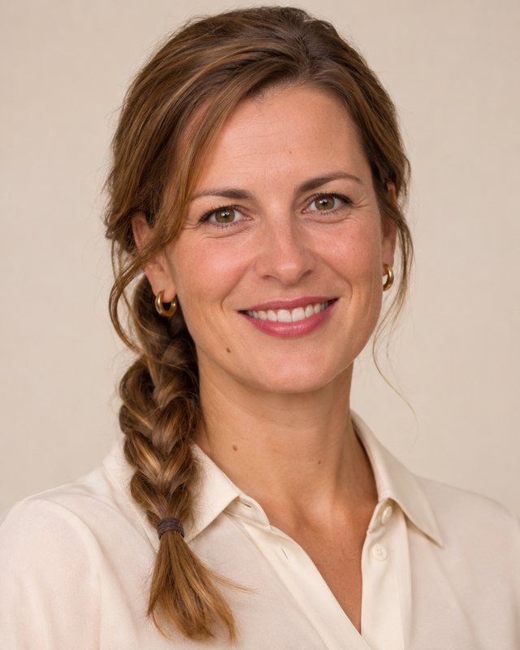
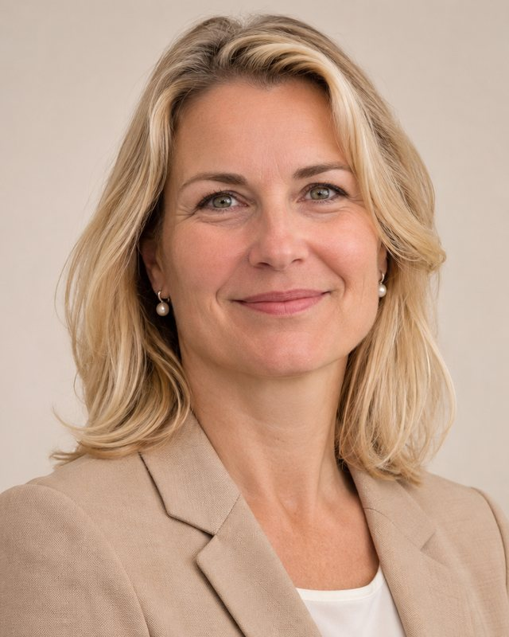
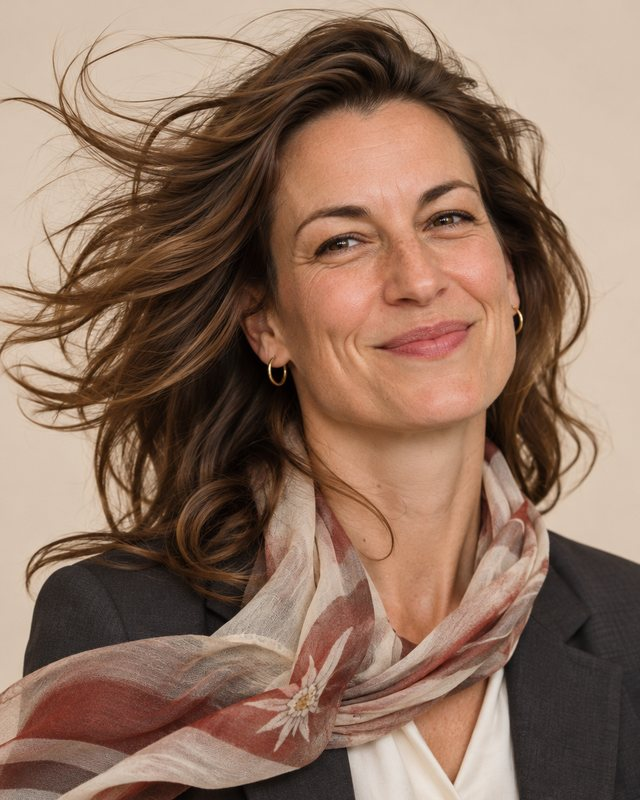
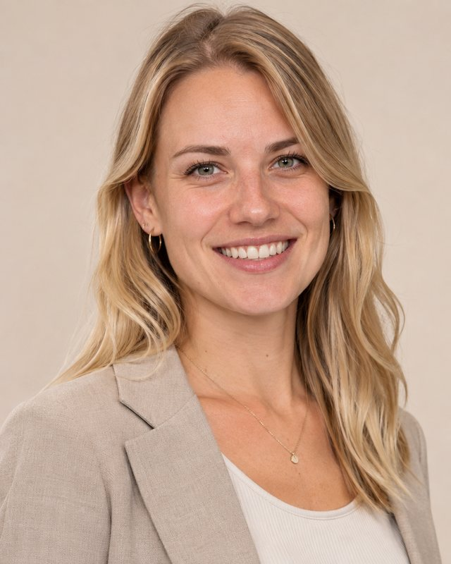

Personen
Ansprechpersonen
Die Leitung des Amtes sowie die Leitungen aller Sektionen, Abteilungen und Stabsstellen.
Amtsleitung

Stabsstellen

Sektion I: Präsidialsektion

Sektion II: Grundsatz, Sonderfälle und Sonstiges

Dr.in Andrea Schwarzl
Sektionschefin, Leiterin der Sektion II
Sektion II: Grundsatz, Sonderfälle und Sonstiges

Sektion III: Besondere Verfahren
Univ.-Prof. Dr. Klaus Moosbrugger
Sektionschef, Leiter der Sektion III
Sektion III: Besondere Verfahren

Sektion IV: Außergewöhnliche Ereignisse
Mag.a Brigitte Leitner
Sektionschefin, Leiterin der Sektion IV
Sektion IV: Außergewöhnliche Ereignisse
Michael Reiter, BA
Abteilungsleiter IV/1 (Leiter Lagezentrum)
Abteilung IV/1: Lagezentrum Besonderheiten

Dr.in Veronika Lechner
Abteilungsleiterin IV/2
Abteilung IV/2: Föhn, Wetterfühligkeit und Unvorhergesehenes
HR Dr. Ferdinand Schnitzler
Abteilungsleiter IV/3 (Kustos des Kuriositätenkabinetts)
Abteilung IV/3: Kuriositätenkabinett und Amtsarchiv
Sektion V: Digitales und Register

Mag. Karl Pospischil
Abteilungsleiter V/1 (Registerführer)
Abteilung V/1: Bundesregister besonderer und sonstiger Angelegenheiten (BRbsA)
